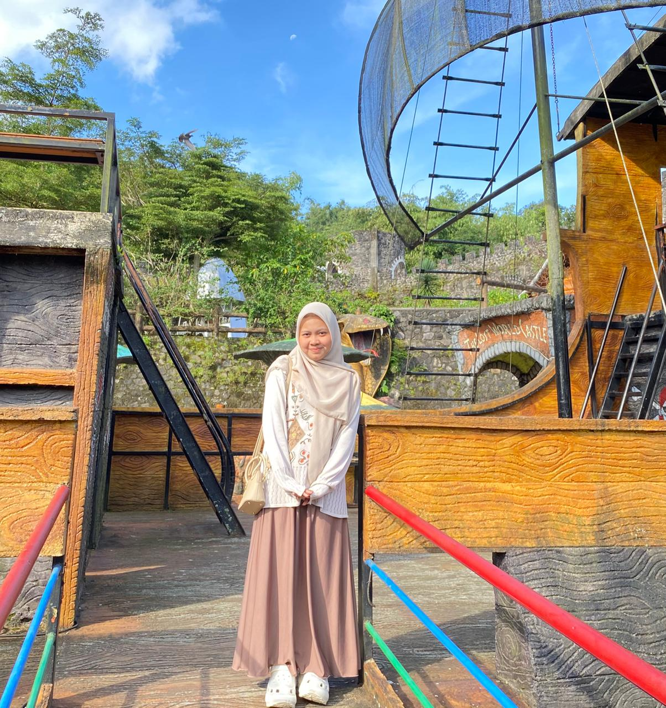

Mahasiswa Sistem Informasi semester 6 di Universitas Ahmad Dahlan yang memiliki minat pada bidang UI/UX Design dan Front-End Development. Berpengalaman dalam merancang antarmuka yang user-friendly, membuat wireframe, serta mengembangkan prototype menggunakan Figma. Selain itu, saya juga memiliki kemampuan dasar dalam pengembangan website menggunakan HTML, CSS, dan JavaScript untuk membangun tampilan yang responsif dan interaktif. Saya tertarik untuk menciptakan pengalaman digital yang tidak hanya menarik secara visual, tetapi juga mudah digunakan sesuai kebutuhan pengguna. Berkomitmen untuk terus mengembangkan kemampuan di bidang UI/UX dan pengembangan web, serta siap berkontribusi dalam tim sebagai UI/UX Designer maupun Front-End Developer.
Mata Kuliah: Teknologi Web
Platform Resep Masakan Online Cookify adalah platform resep masakan online yang memudahkan pengguna mencari, menemukan, dan menikmati berbagai resep masakan. Dengan antarmuka yang ramah pengguna, Cookify memungkinkan pengguna untuk menjelajahi resep berdasarkan kategori, melihat detail resep, dan memberi ulasan setelah mencoba masakan.
Lihat GitHubMata Kuliah: Teknologi Mobile
Cookify adalah aplikasi mobile berbasis Flutter yang dirancang sebagai platform resep masakan online yang interaktif dan mudah digunakan. Aplikasi ini membantu pengguna mencari dan mencoba berbagai resep dalam satu aplikasi yang responsif dan intuitif. Pengembangan aplikasi ini dilakukan secara berkelompok (3 orang) dengan pembagian tugas dalam desain, pengembangan, dan pengujian aplikasi.
Lihat FigmaMata Kuliah: Desain Pengembangan dan Sistem Informasi
Aplikasi Manajemen Barang Hilang memudahkan pelaporan dan pengembalian barang hilang di lingkungan perkantoran secara digital. Pengguna dapat melaporkan barang temuan dengan mencantumkan lokasi, sementara proses pengembalian dilakukan oleh satpam melalui verifikasi identitas untuk menjaga keamanan. Pengembangan aplikasi ini dilakukan secara berkelompok
Lihat FigmaMata Kuliah: Riset Dan Desain Pengalaman Pengguna
Merancang prototipe antarmuka aplikasi akademik Adisty dengan fokus pada pengalaman pengguna, mulai dari identifikasi kebutuhan, penyusunan user task, hingga pembuatan alur interaksi pada fitur utama. Prototype kemudian diuji menggunakan metode SUS dan Maze testing untuk mengevaluasi kemudahan penggunaan. Proyek ini dikerjakan secara berkelompok
Lihat FigmaMata Kuliah: Riset Dan Desain Pengalaman Pengguna
Desain UI/UX ini adalah tampilan aplikasi e-commerce yang memudahkan pengguna untuk login, mencari produk, melihat detail, menambahkan ke keranjang, dan melakukan checkout dengan tampilan yang sederhana dan mudah digunakan.
Lihat FigmaUI Design, Wireframing, Prototyping, HTML, CSS, Figma